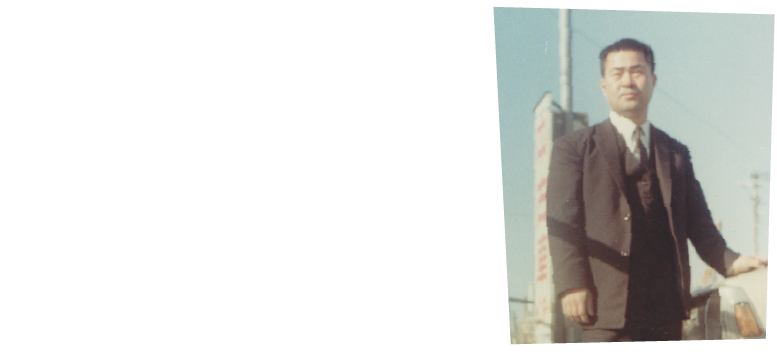
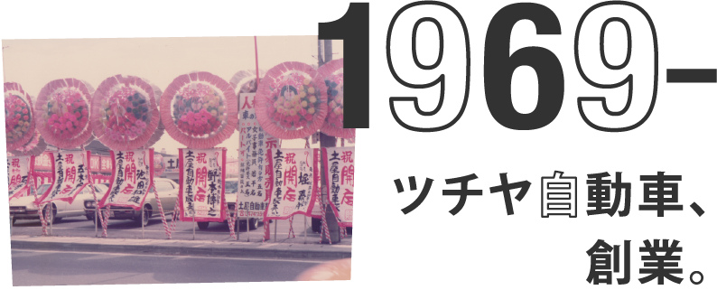

ツチヤの歴史は、業界の歴史ーーーツチヤ自動車、
半世紀の追体験。
日本の中古車販売事業を黎明期から支え、同業者と共に市場を作ってきたツチヤ自動車。業界を変えるエポックを数々築き、「ツチヤの歴史は、中古車販売の歴史である」とも言われる。創業者 土屋正己とツチヤ自動車の、半世紀を紐解く

土屋正己、25歳。
新車ディーラーを経験した後、
青雲の志で、中古車販売事業に乗り出す
-

1962年（昭和37年）、高校を卒業した土屋正己は、トヨタ系の新車ディーラーへ就職した。運転免許証すら持っていない土屋だったが、営業成績は好調。東京向島界隈を、靴底をすり減らしながら歩きまわる日々だった。 数年後、中古車を扱う部署に異動となると、すぐにその魅力に取りつかれた。新車販売においては、値引き可能な範囲は分かっても実際の原価は分からない。だが中古車であれば仕入れ値と売値が明確で、自分がどれだけの利益を生み出したのかがハッキリしていた。「これぞ商売だ」と思った。このときの体験が、後々独立するきっかけとなる。
-
土屋と同じく、中古車販売業を始めた仲間は数多くいた。いつからか、同業者同士で毎週集まるようになり、次第にオークションが行なわれるように。毎週のように、40～50台に及ぶ中古車が取引された。とはいっても、実物を持ち寄るのは物理的に困難だったこともあり、主に書類上での取引。いわゆる“ペーパーオークション”である。これが後々、オートオークション会場設立へと繋がっていく。現在のオートオークションの源流は、このときすでに生まれていたのだ。
-

新車ディーラーでの中古車販売経験をもとに、土屋正己はついに独立を決意した。新車、中古車問わず、時代は自動車を欲していた。新車が好調に売れていくと、それに合わせて中古車も市場に出回る。放っておくとすぐにディーラーの駐車場が中古車で溢れてしまうような、そんな時代だった。1969年（昭和44年）、東京都葛飾区新小岩にて、ツチヤ自動車の前身となる土屋自動車販売が設立された。
サラリーマン月収が
2万円
サラリーマン月収が 2万円
高度経済成長が続く当時の日本。新車需要の高まりと同時に、中古車需要も伸びていました。その販売価格はおよそ20万〜50万円程度。サラリーマンの月収が2〜3万円であり、今のようにローン制度も無い時代でしたが、それでも販売は好調でした。
「白いクラウン」のキャッチコピーで、トヨタ・クラウンがCMされたのもこの頃。それまでは、高級車であるクラウンは法人利用が多く、「法人＝黒塗り」のイメージでしたが、“白いセダン”は、「個人利用」の象徴。個人でも高級車が手に入る時代を反映していたと言えるでしょう。
時代は、
モータリゼーション真っただ中。
試行錯誤の中、
事業拡大と業界の発展を目指す。
-
「中古車販売」という、まだ新しい事業を大きくしていく中で、土屋は、この業界の”影”の部分にも目を向けるようになる。多くの同業者がマジメに商売している一方で、走行メーターを巻き戻したり、事故車を無事故と偽って売りつけたりする悪質な業者が現れていたからだ。
「業界の発展なくして、会社の発展なし」。そう思った土屋は、仲間と共に組織活動をスタートさせる。現在、国内最大の中古車流通組織であるJU(日本中古自動車販売教会連合会)に繋がる動きは、このときに始まっていた。 -
ツチヤ自動車創業当時から業界仲間が毎週集まって実施していたオークションだが、この頃になるとその規模は更に拡大していた。そこで1972年(昭和47年)、15社からなる東京都中古車卸売事業共同組合を設立。現車オークション事業を本格的に開始した。
-
土屋が2店舗目の出店を計画したのは1976年(昭和51年)のこと。場所は船橋市の花輪インター付近。千葉県下には中古車展示場がまだ少なかったことに目をつけ、県内最大級となる1200坪の展示場をオープンした。ツチヤ自動車のお馴染みフレーズ『中古車のデパート』もこのときに誕生し、テレビCMも放送を開始。知名度の上昇に伴って、同業者がマイクロバスで視察に来るなど、話題となった。機を見て大胆な戦略に打って出る土屋正己の本領はこのときから発揮されていたのである。
-
近畿地方の大手中古車店へ視察に行ったときのこと。土屋はそこで、無料でオイル交換する光景を目の当たりにし、驚きを隠せなかった。「なぜこんなことをやっているのか」そう尋ねる土屋に中古車店の社長は一言「お客様との絆が太くなるから」。
会社に戻ると土屋はすぐに同様のサービスを開始。良いものはすぐに取り入れるのが土屋のモットーだ。結果、お客様との接点が増え、長い信頼関係を育む一助となった。その後、現在に至るまでこのサービスは続いている。
土屋の座右の銘「継続は力なり」を実践した格好だ。
車を買う苦労
車を買う苦労
高度経済成長が続く当時の日本。新車需要の高まりと同時に、中古車需要も伸びていました。その販売価格はおよそ20万〜50万円程度。サラリーマンの月収が2〜3万円であり、今のようにローン制度も無い時代でしたが、それでも販売は好調でした。
「白いクラウン」のキャッチコピーで、トヨタ・クラウンがCMされたのもこの頃。それまでは、高級車であるクラウンは法人利用が多く、「法人＝黒塗り」のイメージでしたが、“白いセダン”は、「個人利用」の象徴。個人でも高級車が手に入る時代を反映していたと言えるでしょう。
機を見るに敏。
堅実に、そして大胆に。
必勝パターンを見出し、
次々と店舗を展開する。
-
1983年(昭和58年)12月、土屋は4店舗目をオープンした。出店先となる成田周辺は当時、山林に囲まれ閑散としたものだったが、それでもこの土地に決めたのは、1978年に成田空港が完成していたからである。国道が整備され、成田の町全体がいずれ賑わいを見せるだろうと、土屋は確信していた。その予想は見事に現実のものとなり、東関東自動車道の整備、空港関連企業の増加
によるニュータウンの発展、国道51号の4車線化、商業エリアの拡大など、みるみるうちに人の集まる場所となっていった。以来、成田店は30年以上にわたって商売繁盛を続ける店舗である。この成功を皮切りに、1986年(昭和61年)から1989年(平成元年)にかけて、東金店、茂原店、本社市川店と出店ラッシュが続く。
-
5店舗目となる東金への出店は、土屋にとって特別な想いが伴うものだった。九十九里浜地域は、土屋が生まれ育った地元だったからである。中古車店はもちろん飲食店などもまだ少ないエリアだったが、だからこそ100台以上の展示在庫を置くツチヤ自動車東金店は注目を集め、宣伝効果抜群であった。地元だけに親族・親戚はもちろん、友人・知人など多くの人が来
店し、車を購入してくれた。そのことは土屋にとって"故郷に錦を飾る"ことであり、また、独立して良かったとつくづく思える出来事となった。
-
「地域の発展性を先読みして出店する」というのが、この頃の土屋の必勝パターンとなっていた。千葉県南東部の茂原市に6店舗目の出店を計画。このエリアを選んだ理由は千葉県外房有料道路が茂原まで伸びたからだった。成田市や東金市と同様の発展を予想したのである。日本経済の強さ、景気の良さといった追い風もあり、営業は順調。茂原店前を走る国道128号も片側1車線から2車線へと変わり、市内に大型ショッピングセンターが次々と出来て賑わいを見せるようになった。またしても土屋の読みが当たったのである。
-
いつか立派な本社社屋を建てようという想いを、土屋はかねてから持っていた。いよいよそのときが訪れたのである。時代はバブル景気の絶頂期。ツチヤ自動車の業績も絶好調と呼べるものだったが、バブル熱に浮かされての本社新築ではなかった。「堅実に、そして大胆に」が土屋の持論。建設予定地はすでに以前から手に入れていたのだ。例によって、そのエリアの発展性を見越して用意されていた計画である。
「社屋を建てるこの土地は近い将来、市川市郊外で一番の交差点になる」。その予測はまたも当たり、有料道路が無料化するなどして交通量が増え、周囲には飲食店舗などが次々と増えていった。広い展示場と「中古車のデパート」と書かれた大きな看板は付近の目印となり、今ではここを"ツチヤ交差点"と呼ぶ人も少なくない。
バブル景気がやってきた！
バブル景気がやってきた！
高度経済成長が続く当時の日本。新車需要の高まりと同時に、中古車需要も伸びていました。その販売価格はおよそ20万〜50万円程度。サラリーマンの月収が2〜3万円であり、今のようにローン制度も無い時代でしたが、それでも販売は好調でした。
「白いクラウン」のキャッチコピーで、トヨタ・クラウンがCMされたのもこの頃。それまでは、高級車であるクラウンは法人利用が多く、「法人＝黒塗り」のイメージでしたが、“白いセダン”は、「個人利用」の象徴。個人でも高級車が手に入る時代を反映していたと言えるでしょう。

ツチヤ自動車は...
研修制度充実

ツチヤ自動車は...
世話好きの人が多い

ツチヤ自動車は...
チームワークがいい

ツチヤ自動車は...
研修制度充実

ツチヤ自動車は...
頼れる先輩がいる

ツチヤ自動車は...
頼れる先輩がいる
ツチヤ自動車は...
研修制度充実
ツチヤ自動車は...
世話好きの人が多い
ツチヤ自動車は...
チームワークがいい
ツチヤ自動車は...
研修制度充実
ツチヤ自動車は...
頼れる先輩がいる
ツチヤ自動車は...
頼れる先輩がいる